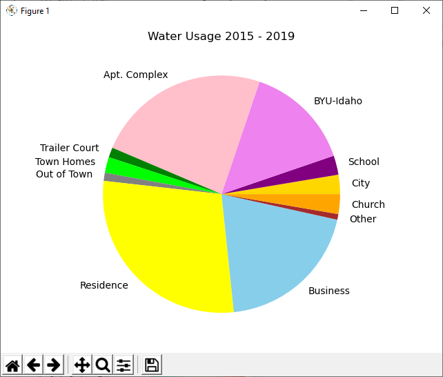
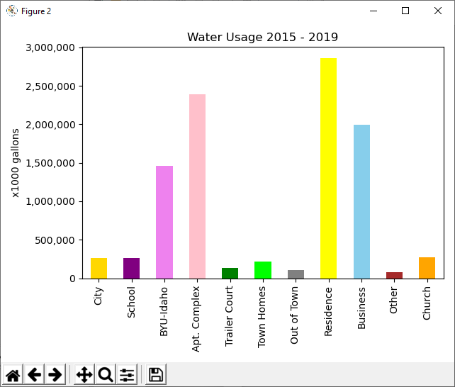

10 Prepare: Data Visualization
Data visualization is the graphical representation of data in charts and graphs to help people visualize and understand data more easily than they would by looking at tables of numbers. Data visualization is closely related to and often comes after data analysis. In other words, a data scientist will often perform data analysis to process large data sets and then employ data visualization techniques to make charts and graphs from the data.
The pandas module includes functions to draw
different types of charts. In pandas, charts are called
plots. Interestingly, the plots are not actually drawn by
pandas but instead by another Python module named
matplotlib.pyplot.
Concepts
Here are the Python programming concepts and topics that you should learn during this lesson.
- We can use the functions that are part of the
pandasDataFrame.plotobject to draw different types of plots, including line, vertical bar, horizontal bar, histogram, box, pie, and scatter. - Drawing a plot can be as simple as these three steps:
- read the data
- define the plot
- draw (show) the plot
In the above example, lines 2 and 11 are easy to forget but without them, the plots that your code defines will not be shown on the computer's monitor.import pandas as pd import matplotlib.pyplot as pyplot # Read a DataFrame from a CSV file. df = pd.read_csv("filename.csv") # Define a vertical bar plot from the DataFrame. df.plot(kind="bar", x="column_name_1", y="column_name_2") # Draw and show all defined plots. pyplot.show() - Although drawing a plot can be very simple, a data scientist may have to write significant amounts of code to analyze and process the data before defining a plot. This analysis code is the type of code that you learned to write in the previous lesson of this course.
- There are many options that you can use in your code to modify the look and layout of a plot. Some of these options are not available through the
pandasfunctions but instead are available through thematplotlib.pyplotfunctions.
Examples
Here are two plots that were drawn by this
Python program using
pandas and matplotlib.pyplot. Both plots
show the exact same data, first as a pie plot and then as a vertical
bar plot. Although pie plots are very popular, most data scientists
don't use them because they convey less information than a bar
plot.


Documentation
- The
pandasGetting Started Tutorials contain a helpful short section about creating plots. - The
pandasUser Guide contains a long section about creating plots.